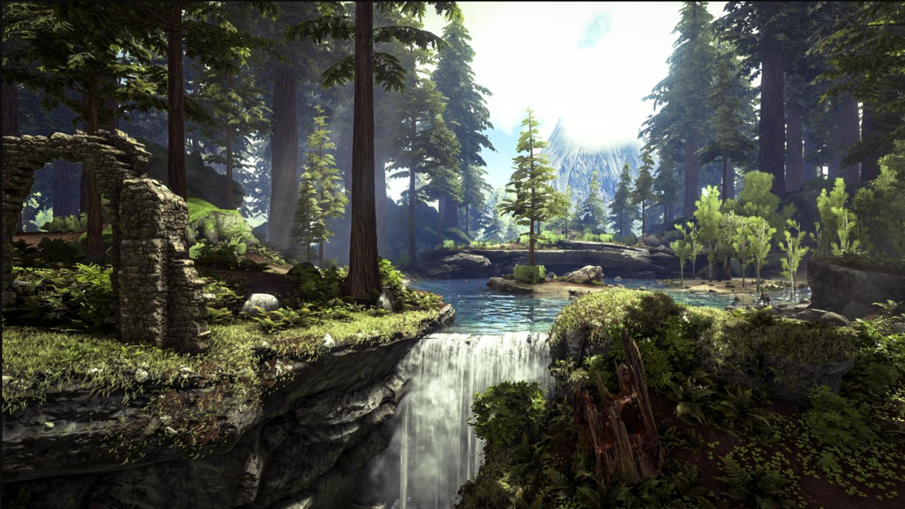

Craigg's Island

We will start at Craigg’s Island, one of the safer places of the larger island. This beach
forest contains almost no active threats, with the only thing you have to look out for being
the occasional Raptor or more, a Therizinosaur’s no-no square, a gang of Compys, or
Titanmyrmas. Other than that, this island provides a good close-up view of Dodos,
Triceratops, and Parasaurs. In the distance, we can see the Red Obelisk in all its glory. But
to get there, we will have to take a short swim.
Southern Jungle - Red Obelisk

Going into the Southern Jungle, we can get a better view of the Red Obelisk. Sadly, we
cannot get too close to it, as last time we had a tour going there, someone touched a
terminal when told not to and we all barely escaped with our lives. That being said, the
same dangers of Raptors and Therizinosaurs still should be noted with caution, as with
every other part of the island especially has the former. You should also look out for
Carnotaurus in the tree line and notify your guide. Watch your stuff as well! Because until
we move across the Writhing Swamps, we will be visited by our mischievous monkey
friends, the Mesopithecus. Next, we will take a detour into the Redwood Forest.
Redwood Forest

The Redwood Forest is where the tallest trees on the Island are. In fact, Redwoods are the
tallest trees that we know of! That’s one of many fun facts you’ll get on this trip. What’s not
as fun is the amount of danger this particular part of the island has to offer. From the many
terror birds on the ground, to the giant bees flying around. This area is one where you have
to be wary. The trees could be hiding thylacoleos, while the ground has dire bears,
microraptors and the unpredictable gigantopithecus. But it is also home to many beautiful
creatures. The gallimimus of the island have made it their mainstay home, while the
megaloceros have decided to also move here from the north. Archaeopteryx go through the
forest in fear, despite this. Unfortunately, we will not be using them as a make-shift
parachute. We will however using one of our tree bases to parachute down into the Southern Islets.